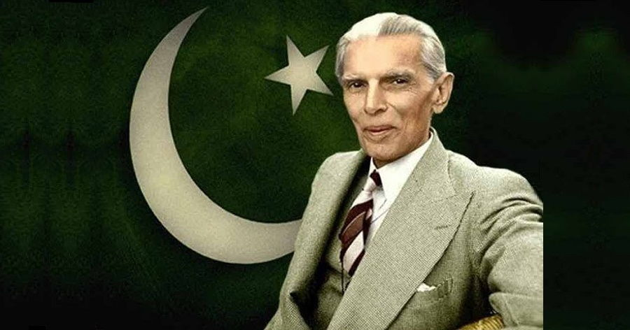

 Mohammed Ali Jinnah was born on 25 December 1876 in Karachi, now in Pakistan, but then part of British-controlled India. His father was a prosperous Muslim merchant. Jinnah's father Jinnahbhai Poonja (born 1850) was the youngest of three sons. He married a girl Mithibai with the consent of his parents and moved to the growing port of Karachi. There, the young couple rented an apartment on the second floor of a three-storey house, Wazir Mansion. The Wazir Mansion has since been rebuilt and made into a national monument and museum owing to the fact that the founder of the nation, and one of the greatest leaders of all times was born within its walls. In 1887, Jinnahbhai's only sister Man Bai came to visit from Bombay. Jinnah was very fond of his Aunt and vice versa. She offered to take her nephew with her in order to give him a chance of better education at the metropolitan city, Bombay, that was much to his mother's dismay who could not bear the thought of being separated from her undisputedly favorite child. Jinnah joined Gokal Das Tej Primary School in Bombay.2 His spirited brain rebelled inside the typical Indian primary school which relied mostly on the method of learning by rote. He remained in Bombay for only six months, returned to Karachi upon his mother's insistence and joined the Sind Madrassa. But his name was struck off as he frequently cut classes in order to ride his father's horses. He was fascinated by the horses and lured towards them. He also enjoyed reading poetry at his own leisure. As a child Jinnah was never intimidated by the authority and was not easy to control. He then joined the Christian Mission High School where his parents thought his restless mind could be focused. Karachi proved more prosperous for young Jinnah than Bombay had been. His father's business had prospered so much by this time that he had his own stables and carriages. Jinnahbhai Poonja's firm was closely associated with the leading British managing agency in Karachi, Douglas Graham and Company. Sir Frederick Leigh Croft, the general manager of the company, had a great influence over young Jinnah, which possibly lasted his entire life. Jinnah looked up to the handsome, well dressed and a successful man. Sir Frederick liked Mamad (Jinnah’s childhood name), recognizing his extreme potential, he offered him an apprenticeship at his office in London.3 That kind of opportunity was the dream of all young boys of India, but the privilege went to only one in a million. Sir Frederick had truly picked one in a million when he chose Jinnah.
Jinnah was trained as a barrister at Lincoln's Inn in London, England. Upon his return to British India, he enrolled at the Bombay High Court, and took an interest in national politics, which eventually replaced his legal practice. Jinnah rose to prominence in the Indian National Congress in the first two decades of the 20th century. In these early years of his political career, Jinnah advocated Hindu–Muslim unity, helping to shape the 1916 Lucknow Pact between the Congress and the All-India Muslim League, in which Jinnah had also become prominent. Jinnah became a key leader in the All-India Home Rule League, and proposed a fourteen-point constitutional reform plan to safeguard the political rights of Muslims in the Indian subcontinent. In 1920, however, Jinnah resigned from the Congress when it agreed to follow a campaign of satyagraha, which he regarded as political anarchy. By 1940, Jinnah had come to believe that the Muslims of the subcontinent should have their own state to avoid the possible marginalised status they may gain in an independent Hindu–Muslim state. In that year, the Muslim League, led by Jinnah, passed the Lahore Resolution, demanding a separate nation for British Indian Muslims. During the Second World War, the League gained strength while leaders of the Congress were imprisoned, and in the provincial elections held shortly after the war, it won most of the seats reserved for Muslims. Ultimately, the Congress and the Muslim League could not reach a power-sharing formula that would allow the entirety of British India to be united as a single state following independence, leading all parties to agree instead to the independence of a predominantly Hindu India, and for a Muslim-majority state of Pakistan.
As the first Governor-General of Pakistan, Jinnah worked to establish the new nation's government and policies, and to aid the millions of Muslim migrants who had emigrated from neighbouring India to Pakistan after the two states' independence, personally supervising the establishment of refugee camps. Jinnah died at age 71 in September 1948, just over a year after Pakistan gained independence from the United Kingdom. He left a deep and respected legacy in Pakistan. Innumerable streets, roads and localities in the world are named after Jinnah. Several universities and public buildings in Pakistan bear Jinnah's name. According to his biographer, Stanley Wolpert, Jinnah remains Pakistan's greatest leader.
Our Quid had given us numerous reasons to love him and respect him. His sayings keep us on the path to never give up and have faith
"With faith, discipline and selfless devotion to duty, there is nothing worthwhile that you cannot achieve."